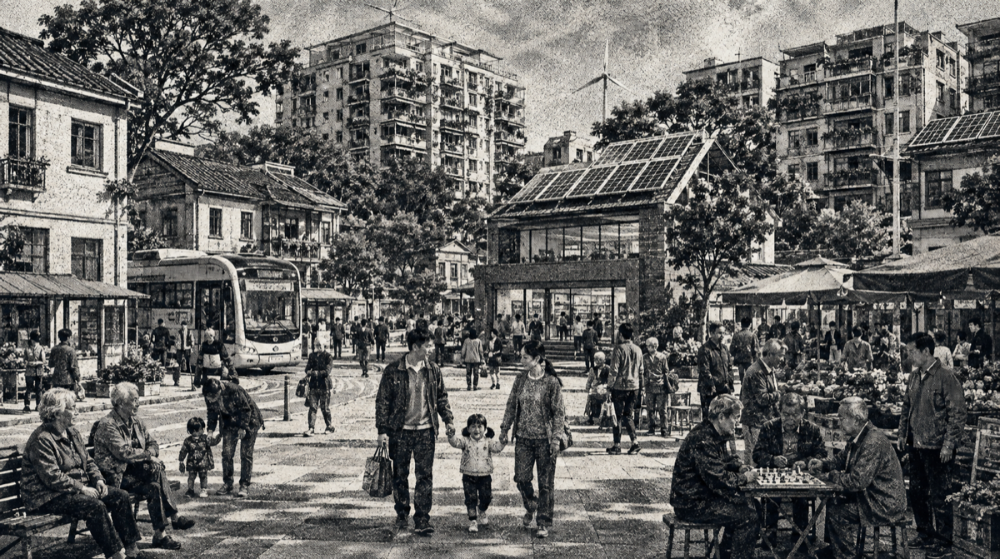

“最近自动化设备越来越多，我们要学的系统也越来越复杂，跟不上就只能被替换。”
未来甲 · 继续集中
效率优先，财富集中
- 生产提速自动化企业保持领先
- 转型变难就业门槛继续抬高
- 分配承压财富差距持续扩大
公民议会 · 正在读取议事周期
人工智能创造的新财富，
该归谁？
人工智能带来前所未有的生产力与财富。预算有限，选择不能兼得——请把你的 十张预算票 分给三项方案，决定我们共同的未来。
把十票分给三个方案尚余 10 票
0 票
0 票
0 票
直接按每个方案下方的“加”或“减”；合计分满十票后即可提交。
未来乙 · 扩大共享
共享成果，机会更均衡

- 收入趋稳家庭安全垫得到改善
- 机会扩散更多居民进入转型通道
- 社区回暖公共信任缓慢上升
民意直播12,841 人参与
公共人工智能 34%转型基金 31%全民分红 35%
实验城实况
人口 —就业率 —社会总产出 —基尼系数 —贫困率 —平均信任 —